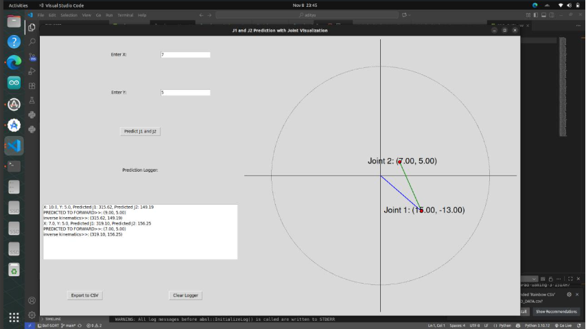

Learning Inverse Kinematics with AI: SCARA Angle Prediction
Replacing Complex Math with Fast Neural Network Predictions 🤖

Traditional inverse kinematics for a SCARA robot can be solved analytically—but it often involves complex trigonometry, multiple valid solutions, and edge cases. This project explores a modern alternative by using deep learning to learn the mapping from position to joint angles.
With a neural network built using Keras, the system can predict joint angles quickly and efficiently, enabling real-time robotic control without relying solely on mathematical equations.
⚙️ From (X, Y) Position to Joint Angles
A SCARA robot typically uses two rotational joints:
- θ1 → base joint
- θ2 → second link joint
The goal is to determine these angles based on a desired end-effector position (X, Y). Instead of solving equations manually, the neural network approximates this inverse kinematics function.
🧠 Why Use a Neural Network?
Inverse kinematics can be:
- Complex for nonlinear systems
- Ambiguous with multiple valid solutions
- Sensitive to singularities
A trained model offers several advantages:
- Learns nonlinear relationships directly from data
- Provides fast predictions for real-time control
- Easy integration into simulation or embedded systems
🛠️ My Role in the Project
I handled the complete machine learning pipeline, from dataset creation to deployment and testing.
📊 Dataset Collection & Preparation
Generated and structured SCARA configurations, mapping joint angles (θ1, θ2) to corresponding (X, Y) positions for supervised learning.
🔄 Data Preprocessing
Normalized inputs and outputs, ensured consistent scaling, and split data into training and validation sets.
🤖 Model Development (Keras)
Designed and trained a regression neural network, tuning architecture and parameters for optimal performance.
📈 Model Evaluation & Optimization
Evaluated performance using error metrics such as MSE and refined the model to improve accuracy and stability.
💾 Model Deployment
Saved the trained model and prepared it for integration into control and simulation environments.
🔗 System Integration
Integrated the model into a real-time system to predict joint angles and drive robotic motion.
🧪 Testing & Validation
Tested model accuracy and responsiveness in simulation, ensuring smooth and precise robot movement.
🚀 Why This Project Matters
- ✅ Simplifies inverse kinematics using AI
- ✅ Enables fast real-time robotic control
- ✅ Reduces reliance on complex mathematical models
- ✅ Demonstrates practical ML application in robotics
🌟 Final Thoughts
This project highlights how machine learning can complement traditional robotics approaches. Instead of replacing physics-based models, it provides a fast, flexible alternative for solving complex problems.
In applications such as simulation, education, and adaptive control, AI-driven inverse kinematics opens new possibilities—transforming complex equations into learned behavior.